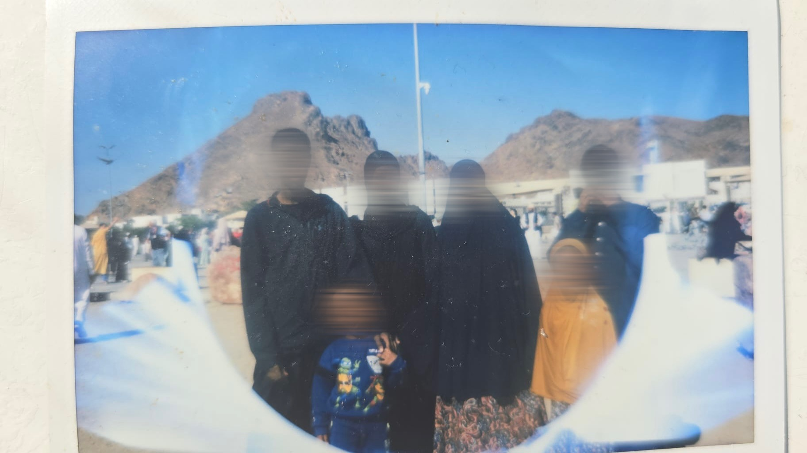

familie
Mijn naam is Asad en ik ben 16 jaar oud. Vandaag ga ik iets vertellen over mijn familie. Mijn familie is een belangrijk onderdeel van mijn leven en ik ben blij dat ik een groot gezin heb. Wij zijn met zeven personen in ons gezin. Ik heb twee broertjes, die Ahmed en Mohamed heten. Ook heb ik een zus die Ubah heet en een zusje dat Adna heet. Omdat we met zoveel zijn, kan het thuis soms best druk zijn. Toch vind ik het fijn om een groot gezin te hebben, omdat er altijd wel iemand om je heen is. Mijn familie zou ik omschrijven als groot, druk en behulpzaam. We doen niet heel vaak activiteiten met z’n allen, omdat iedereen zijn eigen dingen heeft. Toch proberen we af en toe samen iets leuks te doen. Ongeveer om het jaar gaan we naar Duitsland om daar familie te bezoeken. Dat vind ik altijd gezellig, omdat we dan tijd met onze familie kunnen doorbrengen. Soms gaan we ook samen op pad om iets leuks te doen. We zijn bijvoorbeeld een keer naar de Efteling geweest. Zulke activiteiten zijn leuk, omdat we dan even met elkaar kunnen genieten en samen herinneringen kunnen maken. Een van mijn mooiste en bijzonderste herinneringen met mijn familie is dat we met z’n allen Umrah hebben verricht. Dat was een hele speciale ervaring voor mij. Het was mooi om zoiets bijzonders samen met mijn familie mee te maken. Deze herinnering zal ik altijd bij me houden. Wat ik het leukste vind aan mijn familie, is dat we elkaar hebben. We zijn er voor elkaar wanneer iemand hulp nodig heeft. Ook al zijn we soms druk met onze eigen dingen, we blijven familie en kunnen altijd op elkaar rekenen. Mijn familie betekent heel veel voor mij. Eigenlijk is mijn familie alles voor mij. Zonder mijn familie zou ik niet zijn wie ik vandaag ben. Zij hebben mij geholpen om te worden wie ik ben en daarom ben ik erg dankbaar voor hen. Ik hoop dat we nog veel mooie momenten en herinneringen samen zullen meemaken. Ik ben trots op mijn familie en ik ben blij dat ik deel uitmaak van zo’n groot gezin.
